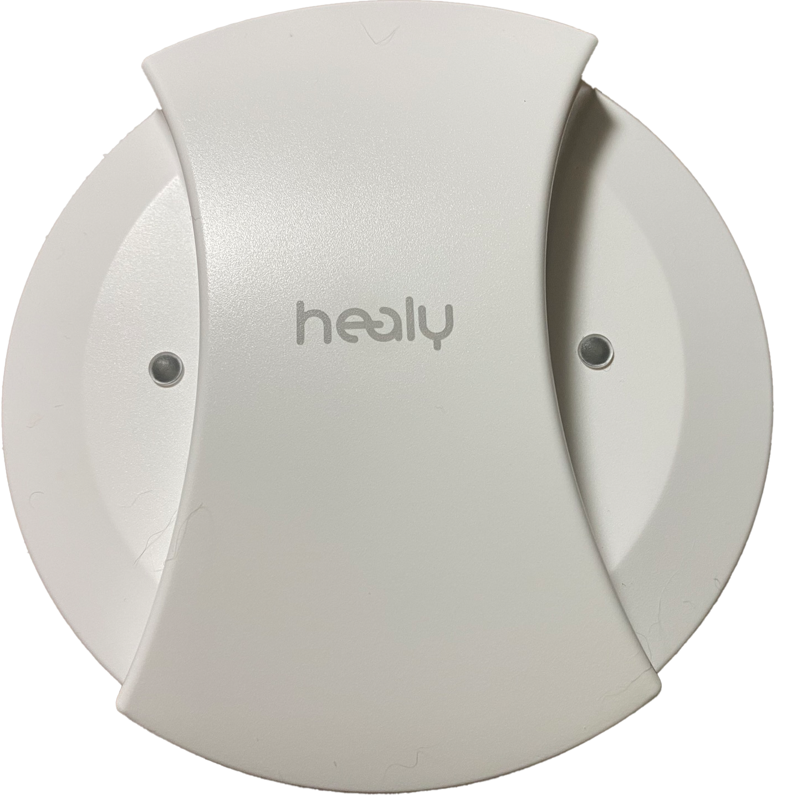

Overview
周波数で、体と心の
エネルギーを整える
ヒーリーは、個別化マイクロカレント周波数（IMF）を使って、生体エネルギーフィールドを調和させるデバイスです。スマートフォンアプリと連動し、200以上のプログラムの中から、その時に必要なものをリアルタイムで適用します。
タイムウェーバーと同じ開発者・マーカス・シュミーク氏が手がけた、ドイツ製のデバイスです。

About Healy
周波数を通じて生体エネルギーフィールドを調和させる、
ドイツ生まれのウェアラブルデバイスです。
Overview
ヒーリーは、個別化マイクロカレント周波数（IMF）を使って、生体エネルギーフィールドを調和させるデバイスです。スマートフォンアプリと連動し、200以上のプログラムの中から、その時に必要なものをリアルタイムで適用します。
タイムウェーバーと同じ開発者・マーカス・シュミーク氏が手がけた、ドイツ製のデバイスです。
Two Apps
ヒーリーはスマートフォンアプリで操作します。アプリは2種類あり、働きかける「レイヤー」が異なります。
ヒーリー1台で3次元も情報フィールドも、ひと通り対応できます。タイムウェーバーと組み合わせると、ブルーアプリでは届かない深い潜在意識の分析・調整が加わり、ヒーリーの効果がより引き出されます。
Why "Mini TimeWaver"
ヒーリーは、ユーザーの間で「小さいタイムウェーバー」と呼ばれることがあります。同じ開発者・同じ思想体系から生まれたデバイスだからです。
How it works
体のすべての細胞は固有の電位（膜電位）を持っており、健康な細胞では−70〜−90mV程度とされています。ストレスや疲労・加齢によってこの電位が乱れると、エネルギーの流れが滞ります。
ヒーリーが働きかけるのは「生体エネルギーフィールド（BEF）」——気やプラーナとも呼ばれる、体・心・魂をつなぐ生命エネルギーの流れです。144,000の黄金の周波数を基に設計されたIMFプログラムが、量子センサーによってリアルタイムに分析・選択され、その時の状態に最適な周波数が適用されます。
What it does
ストレス・睡眠の乱れ・感情の波・慢性的な疲れ。メンタルバランスや仕事/睡眠プログラムが、日常の不調をエネルギー的にサポートします。
経絡・チャクラ・生体エネルギーハーモニーなどのプログラムで、体の気の流れや臓器のエネルギーバランスを調整します。
フィットネス・美容/肌・デジタルニュートリション（ビタミン・ミネラルの周波数）など、生活習慣に合わせたプログラムが揃っています。
Programs
ヒーリーには多数のプログラムがカテゴリごとに用意されています。利用できるカテゴリはご購入のモデルによって異なります。その日の状態や目的に合わせて選択します。
Comparison
同じ開発者・同じ思想でも、働きかける「レイヤー」と「用途」は異なります。どちらが優れているということではなく、それぞれが担う役割が違います。
潜在意識・情報フィールドといった深い領域にアクセスし、エネルギーの根本パターンを最適化します。気づいていない原因に働きかけるアプローチです。
ピンクアプリで体・感情・日常を整えながら、ブルーアプリで情報フィールドにも働きかけられます。1台でひと通りカバーできますが、深い分析・多角的な調整はタイムウェーバーと組み合わせることで格段に広がります。
高次を整えてエネルギーを受け取る。3次元を整えてそれを余すことなく活かす。この2つのアプローチを組み合わせることで、変化がより深く、より日常に根ざしたものになります。
MagHealy
マグヒーリーは、磁場を通じて空間・飲料水・周囲の環境に働きかけるデバイスです。ヒーリーが「体の内側」に作用するのに対し、マグヒーリーは「外側の場」を整えます。自宅のリビング・寝室・仕事部屋に置いておくだけで、空間のエネルギーを調和させます。

磁場を整える14種類のプログラム。リラックス・環境改善・活性化。細胞・再生・睡眠・大地・空中電気など。
空間の質を整える24種類のプログラム。学習・創造性・オフィス・家族の調和・睡眠・チャクラバランスなど。
飲料水を活性化する24種類のプログラム。栄養の輸送・免疫・睡眠・ストレス前後・ファスティングサポートなど。
二重周波数の干渉による24種類のプログラム。関節・神経・感情・迷走神経・腰・脳・睡眠など身体への局所的なアプローチ。
How to use Healy
ヒーリーは紹介制のネットワークビジネス（MLM）で販売されているデバイスです。購入には紹介者が必要で、一般のECサイトでは取り扱いがありません。実際に使っている人から直接説明を受けながら検討できるのが、この形式の特徴です。
① 紹介（MLM）として収益を得る
ヒーリーを気に入った人に紹介し、購入されると報酬が発生します。型やマニュアルのある仕組みに乗りながら、副業・在宅ワークとして取り組める形です。
② オペレーターとしてセッションで稼ぐ
MLMとは別に、ヒーリーをセッションツールとして使い、施術・セッション料金として収益を得る方法もあります。ネットワークビジネスに抵抗がある方でも、技術者・オペレーターとして活動できます。
ヒーリーセッションについて → 準備中
③ 既存の仕事に取り入れて付加価値をつくる
マッサージ・コーチング・ヨガ・エステなど、すでに何らかのサービスを提供している方がヒーリーを組み合わせることで、メニューの幅と単価を広げることができます。
Free Trial
「気になっているけど、実際どんな感じか体験してみたい」という方のために、ヒーリー＆マグヒーリーの無料体験を行っています。
※関西圏はいまだが対応。東京・名古屋・札幌はタイムウェーバー8グループのオペレーターが対応します。
ヒーリー（微弱電流と周波数）とマグヒーリー（磁場）の2つをセットで体験できます。ご自宅やカフェなど、ご希望の場所へ伺います。お一人でもグループでもOK。所要時間は30分〜1時間ほど。初回無料です（エリア・内容により一部条件あり）。
体験・無料セッションについて詳しく読む →